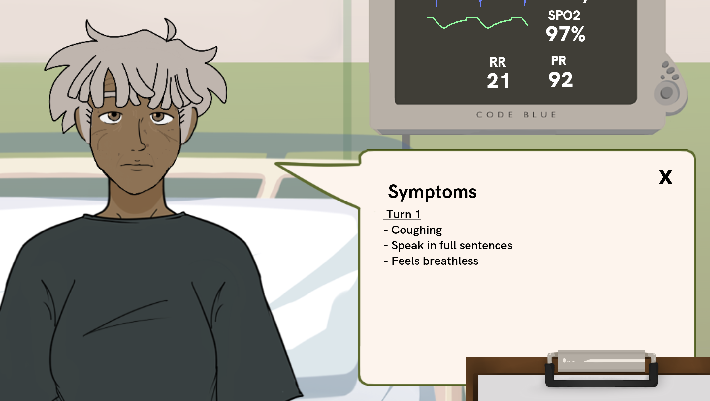
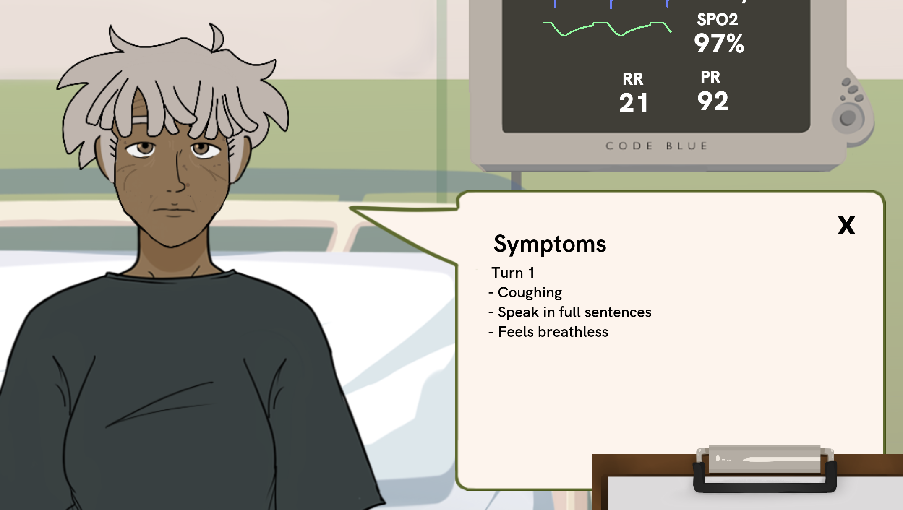
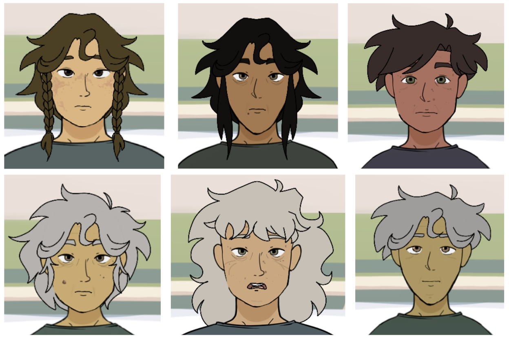

Code Blue: Medical Co-op Simulation Game
FYP Project No: H123290
Hannah Chia (A0225702N)
This work is done together in collaboration with two doctors, A/P Erle Lim and Dr. Michelle Tan, and supported by the Yong Loo Lin School of Medicine (YLLSoM) and Changi General Hospital(CGH) Department of Anaesthesia
| Name | Patient Progression | Multiple patients | Prioritisation amidst distractions | Scalability | Safe? |
|---|---|---|---|---|---|
| Classroom Teaching | Accurate, mostly textual | Difficult/Rare | N/A | OK | Yes |
| Simulation & Role-playing | Accurate | Difficult/Rare | Difficult/Rare | Not Scalable | Yes |
| Learning on the job | Most accurate | Yes | Difficult/Rare | N/A | Not really |
| Serious Game | Accurate | Yes | Yes | Very Scalable | Yes |
Game: Code Blue
Code Blue is a serious medical simulation game set in a hospital ward, where junior doctors learn to prioritise tasks to better serve their patients.
Target Audience: students studying medicine preparing for work in real hospital wards.
Built with Godot and Supabase as a backend, hosted on web
Embedded Demo
Tutorial
Familiarising with the ward
Let's try out a sample game
Prioritise
Executing Actions
Taking a wrong action
Having Results Come Back
Understanding results
Feedback: Patient Screen Info
 

Feedback: Triage patients visually
Exaggerated Breathing animations
>
Feedback: Triage patients visually
Old looking characters
